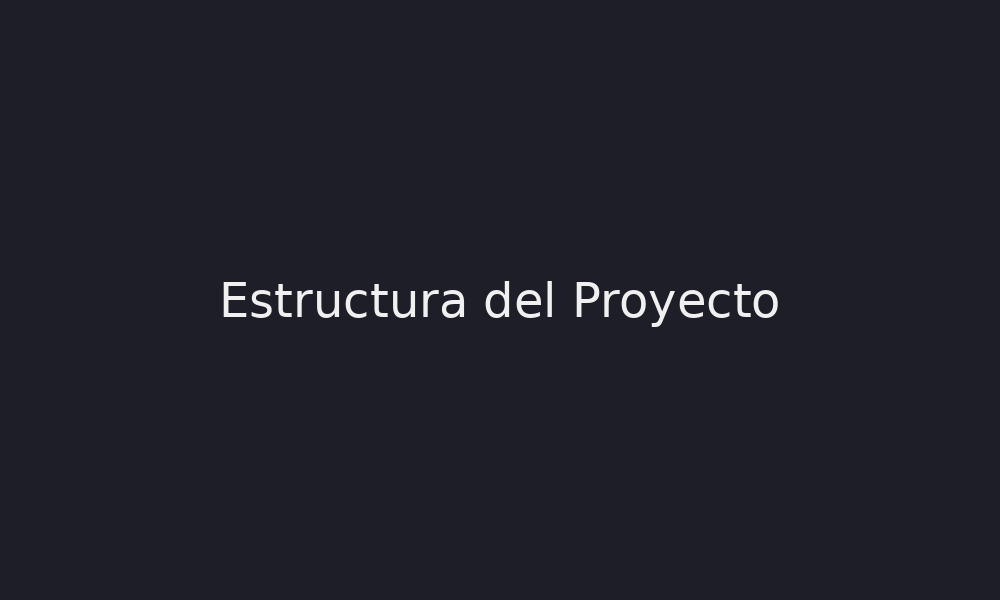

Next.js utiliza un sistema de rutas basado en archivos. Cada archivo dentro de la carpeta pages representa una ruta.
También permite reutilizar componentes mediante importaciones de JavaScript.
import Header from '../components/Header'